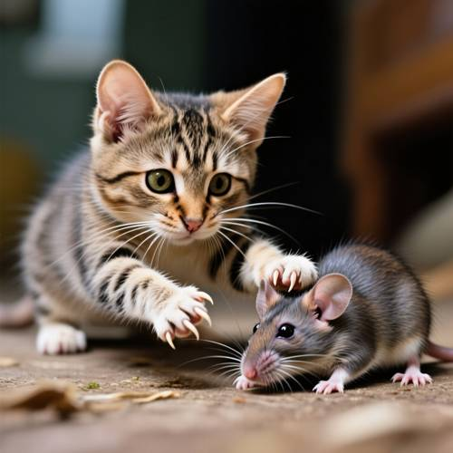
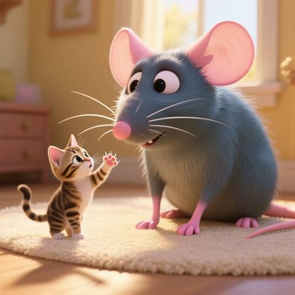

Compound — Generating picture: A little tabloid cat discovered a huge mouse. Inst
Generating picture: A little tabloid cat discovered a huge mouse. Instead of being afraid, it curiously stretched out its claws to fiddle with the creature bigger than itself.

Direct — one call, no iteration

Continuum — Qwen3.8-27B + Qwen-Image
Judge — Direct
FAILCompound - Feature Matching — The image shows a small cat with tabby markings, which aligns with the description of a "little tabloid cat" (assuming "tabloid" is a typo for "tabby"). However, it does not depict a "huge mouse." The mouse shown is significantly smaller than the cat, contradicting the prompt's requirement for a "creature bigger than itself."
FAILLogical Reasoning — The image fails to represent the specified logical reasoning. The prompt describes an "inverted dynamic" where a small cat interacts with a mouse that is larger than the cat. In the generated image, the cat is considerably larger than the mouse, which is a standard predator-prey size relationship, not the inverted one requested.
PASSGrammar - Pronoun Reference — The pronoun "it" refers to the "little tabloid cat." The prompt specifies that "it curiously stretched out its claws to fiddle with the creature." The image correctly portrays this action, showing the cat extending its paw with unsheathed claws towards the mouse. The action is correctly attributed to the subject "it."
Judge — Continuum
PASSCompound - Feature Matching — The image shows a small cat with brown and black stripes, consistent with a tabby ('tabloid') cat. It also features a mouse with blue-grey fur that is significantly larger in size and volume than the cat.
PASSLogical Reasoning — The image depicts the logical requirement of an inverted dynamic. A small kitten is shown actively engaging with a much larger mouse. The kitten is raising its paw with claws extended towards the mouse, indicating interaction and curiosity rather than fear, which aligns with the prompt's narrative.
PASSGrammar - Pronoun Reference — The pronoun 'it' refers to the 'little tabloid cat'. The image correctly shows the cat as the subject performing the action, as it is the one stretching out its paw with its claws visible towards the mouse.
What the agent did
Thinking
Let me think about this prompt. "A small tabby cat discovered a huge mouse. Instead of being scared, it reached out its claws and playfully fiddled with the creature bigger than itself." So, the subject: a small tabby kitten, a huge (giant) mouse, kitten reaching out its claws to playfully touch/provoke the giant mouse. The kitten is curious, not scared. Cute, whimsical scene. Let me generate with qwen-image. First I need to fill in visual details: a tiny tabby kitten facing a comically gigantic mouse (like a giant house mouse, with pink ears and a long pink tail), the kitten reaching out one paw with extended claws to poke/touch the mouse's nose or whiskers, the mouse looking surprised but friendly, a warm indoor or outdoor scene. Cute illustration, or photorealistic? The prompt doesn't specify a style. Since it's a whimsical scene, a cute 3D render or photorealistic with a cute touch would be fine. I'll go with a cute, high-quality illustration/3D-render style, or a warm, soft photorealistic-ish scene. For a cute scene like this, a "Pixar-style 3D render" would be nice, but the prompt says "generate picture" without a style. Let's go with a cute, high-quality illustration/3D render, warm lighting, shallow depth of field. Composition: kitten in the left foreground, giant mouse occupying the right side, eye level, kitten stretching out a paw with visible claws to poke at the mouse's toe/nose. Size contrast: mouse is much bigger than the kitten. Let me write the generation prompt: "A tiny tabby kitten standing on its hind legs in a soft sunlit living room, facing a comically gigantic house mouse the size of a puppy. The kitten is curious and playful, not scared, one small paw raised with extended claws, gently poking at the giant mouse's long pink toe. The giant mouse crouches down, big pink ears, dark beady eyes, whiskers, looking surprised but gentle. Warm cozy lighting, fluffy rug, shallow depth of field, cute 3D illustration style, soft pastel colors, adorable, whimsical." Size: default 1024x1024. Maybe a landscape 1024x768? The prompt says the size is fixed by the harness; better to use the default 1024x1024? Landscape might fit a scene with two subjects better. But the benchmark says the image size is fixed for comparison — I think the default 1024x1024 is safe. Going with 1024x1024. After that, inspect, and edit as needed. Alright, let's generate.
Step 1 — `generate_image`
{
"model": "qwen-image",
"prompt": "A tiny tabby kitten standing on a soft cream rug in a warm sunlit room, facing a comically gigantic house mouse the size of a small dog. The kitten is curious and playful, absolutely not scared, one small front paw raised with extended claws, gently poking and fiddling at the giant mouse's long pink toe. The giant mouse crouches down on its haunches, huge pink ears, big dark beady eyes, long whiskers, looking surprised but gentle and friendly. Cozy warm golden lighting, soft shadows, shallow depth of field, adorable cute 3D illustration style, soft pastel colors, whimsical and heartwarming scene.",
"width": 1024,
"height": 1024
}
Result img_0
Thinking
The image is really good. A small tabby kitten is standing in front of a giant mouse, raising a paw with its claws extended, and touching the mouse's nose/whiskers. The kitten is curious and unafraid, and the mouse is big and gentle. Checking details: the kitten's raised paw—does it look like the claws are extended? Let me inspect the region around the kitten's paw to verify the claws. Also, let me confirm that the kitten's expression is curious rather than afraid—seems fine, eyes wide, facing the mouse. The mouse's eyes look a bit startled, but that's fine—it's reacting to the kitten. Let me inspect the kitten's paw region and verify the claws.
The kitten's raised front paw clearly has extended claws (sharp white claws are visible), and it's reaching toward the mouse's pink nose/whiskers. The image matches the prompt well: - Small tabby cat ✓ - Giant mouse ✓ - Cat is not afraid, showing curiosity ✓ (face is calm, wide-eyed, no crouching or arched-back fearful posture) - Extending claws and fiddling with a bigger creature ✓ (claws visible, touching the mouse's nose) This is a good result. Should I edit? The cat's expression looks more like a surprised/open-mouthed expression than "curious," but it reads as playful curiosity. The mouse's eyes are big and round, looking at the cat. The scene is warm and appealing. I could also consider minor improvements: the cat's mouth is open, and it might look a little startled rather than curious. But honestly, this reads well as a playful, curious gesture. Following the discipline, "good enough is the stopping condition." The image matches all the elements of the prompt. I'll mark img_0 as the best and stop.
Model
The raised paw shows clearly extended white claws fiddling at the mouse's nose, the kitten is upright and curious rather than cowering, and the size contrast is strong — every element of the prompt is present.
Step 3 — `mark_best`
{
"image": "img_0",
"reason": "Tiny tabby kitten with visible extended claws curiously fiddles at the nose of a comically giant mouse; expression is playful/curious, not afraid, matching all prompt elements."
}
Thinking
Complete. The marked image is img_0, which is also the latest image. Please briefly confirm the results with the user.
Model
Done! The picture captures the moment: a tiny tabby kitten, far from cowering, stands its ground with one paw raised and claws extended, playfully fiddling at the nose of a giant mouse that dwarfs it. The mouse crouches down with wide, surprised-but-gentle eyes, and the warm sunlit room makes the scene feel cozy and whimsical. Verified up close that the kitten's claws are properly extended as it reaches out, and the image is marked as the final result.